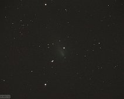

Comet Neat
Comet Neat is visible as a fuzzy "star" in this ~3 minute star trail taken from Pinkney's back yard.
{kind=link}
Comet Holmes in Perseus
Comet Holmes reached naked-eye brightness in 2007 after some amazing outbursts. It is the fuzzy object just left of the bright stars of Perseus.
{kind=link}
Comet Holmes from back yard
Comet Holmes in the constellation Perseus in fall of 2007. The foreground tree leaves were lit up by yellowish security lights.
{kind=link}
Comet Holmes close up
Comet Holmes underwent an outburst in 2012 that made it visible to the naked-eye. This image was taken with a Canon Digital Rebel XT on the 12" Meade with a…
{kind=link}
Comet Holmes
Comet Holmes underwent an outburst in 2012 that made it visible to the naked-eye. This image was taken with a Canon Digital Rebel XT on the 12" Meade with a…
{kind=link}
Comet 103P/Hartley 2 ?
Most likely Comet 103P/ Hartley 2 since that was the brightest comet in Oct 2010, but this comet is fainter than the 5th magnitude reported by others. Digital…
{kind=link}
Comet Garradd(?)
Most likely comet C/2009 P1 (Garradd), since it was the brightest comet of (October) 2011. At the time it was near magnitude 6.6. Taken with DSI II on 10/24/11.
{kind=link}
Comet C/2009 P1 (Garradd)
Comet C/2009 P1 Garradd imaged by the Atik CCD on the 80 mm APO on 3/22/12. The colors are redder than actual colors (which are normally greenish). This…

Comet Hergenrother
A GIF animation of comet Hergenrother. Taken with the Meade DSI II on 10/12/12.
{kind=link}
Comet 168/P Hergenrother
Comet Hergenrother with the Meade DSI II on the 12" Meade. Attempted to guide on the comet nucleus which makes the stars have trails.
{kind=link}
Comet C/2011 L4 PanSTARRS
Comet C/2011 L4 PanSTARRS in 3/14/13 taken with the Canon Digital Rebel with its kit lens on a tripod. This comet was barely visible to the naked eye. The…
PanSTARRS at Sunset
A movie (click to play) of comet C/2011 L4 (PanSTARRS) and its visible tail as the sun sets. It moves down and to the right starting left of center (hard to see…
PanSTARRS at Sunset 2
A movie (click to play) taken 5 days after the last one of comet C/2011 L4 (PanSTARRS). It moves down and to the right as before. Taken 3/19/13.
{kind=link}
Comet C/2014 Q2 (Lovejoy)
Comet C/2014 Q2 (Lovejoy) seen on Jan 15, 2015. Imaged with the Atik CCD on the 80 mm APO refractor through RGB filters. This one has fairly accurate colors! …
{kind=link}
Comet C/2015 V2 (Johnson)
Comet C/2015 V2 (Johnson) in 5/12/2017. Taken with the Atik CCD on Meade 80 mm Apo. It was about 7th magnitude.
Comet Johnson Movie
A movie of Comet C/2015 V2 (Johnson). It reached perihelion on 6/12/17, and was 7th mag here on 6/24/17. It is the fuzzy object near the top middle.
Comet ASASSN
A short movie of Comet C/2017 O1 (ASASSN) moving through the sky, in black and white. It is the faint object, which appears to be moving quickly, but this is…
{kind=link}
Comet 64P Animation
Two black-and-white images of Comet 64P Swift-Gehrels combined into a GIF animation showing the direction of its movement. Taken with Atik on 11/06/18.

Comet 64P/Swift-Gehrels
Comet 64P/Swift-Gehrels imaged with the Atik CCD on the Celestron 11-inch on 11/6/2018. Colors not very accurate.
{kind=link}
Comet 46P Animation
A GIF animation of Comet 46P/Wirtanen, created from multiple exposures taken with the Canon T5i on 12/07/18. Some trailing is noticeable on some longer…
{kind=link}
Comet 46P/Wirtanen in 2018.
Comet 46P/Wirtanen taken with the Canon T5i (120 sec) on 80 mm APO on 12/9/2018. Colors fairly accurate.

{kind=link}
C/2019 Y4 (ATLAS)
Comet C/2019 Y4 (ATLAS) on 4/14/20. Taken with the Canon T5i (123 sec exposure) on the Celestron 11-inch. This comet was about 9th mag at the time and…
{kind=link}
Comet C/2020 F3 (NEOWISE)
Comet C/2020 F3 (NEOWISE) on 7/17/20. Taken with the Canon T5i (30 sec exposure) on a tripod in the backyard. Even though it was low in the WNW, this was one…
{kind=link}
Comet C/2020 F3 (NEOWISE)
Comet C/2020 F3 (NEOWISE) seen setting over the ONU Observatory roof on 7/18/20. A 90 sec exposure with the Canon T5i. The green tint of the comet's coma…
{kind=link}
2020 F3 (NEOWISE)
Comet 2020 F3 (NEOWISE) on 7/18/20. Taken from the observatory with the Canon T5i on a tripod. A 20 second exposure was enough to reveal this 2nd magnitude…
{kind=link}
Comet 29P/Schwassmann-Wachmann 1.
Comet 29P/Schwassman-Wachmann 1 in R-band. ATIK CCD on C11. 120 sec. Taken on 12/2/21 when it was estimated to be 13 mag.
{kind=link}
29P/Schwassmann-Wachmann 1
Comet 29P/Schwassmann-Wachmann 1 was only about 13th magnitude when this picture was taken on 12/2/21. Taken with the Atik CCD on the Celestron 11-in…
{kind=link}
Comet C/2019 L3 (ATLAS).
Comet C/2019 L3 (ATLAS) in R-band. ATIK CCD on C11. 90 sec. Taken 12/2/21 when it was estimated to be 9.9 mag.
{kind=link}
Comet C/2017 K2 (PanSTARRS)
Comet C/2017 K2 (PanSTARRS) on June 30, 2022, when it was about 8.8 magnitude. Taken with Canon T5i on the 80 mm APO. Cropped down.
{kind=link}
C/2017 K2 (PanSTARRS)
C/2017 K2 (PanSTARRS) taken with the Canon T5i on the Celestron 11-inch on 6/30/22 when the comet was about 8.8 magnitude. Colors are fairly accurate.
{kind=link}
{kind=link}